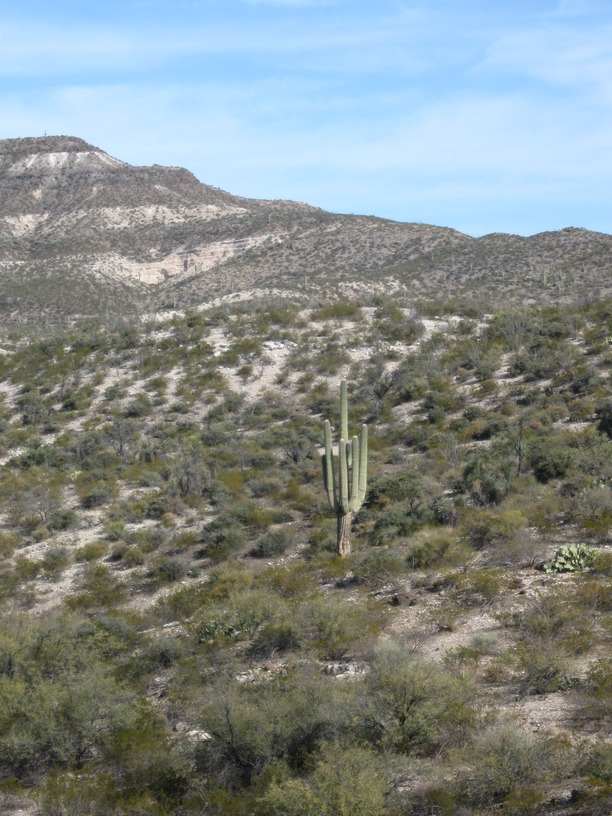
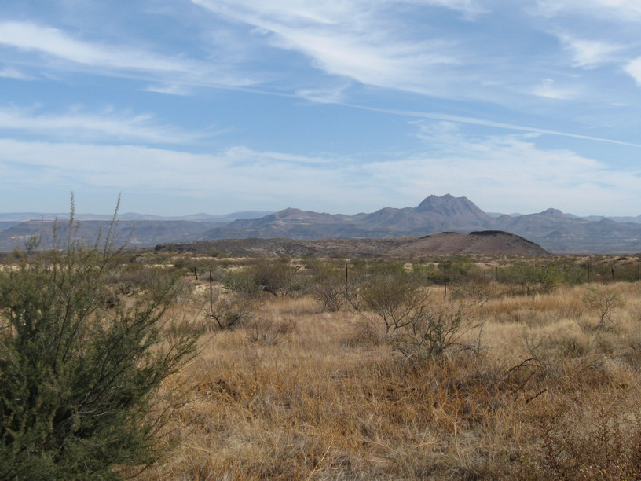
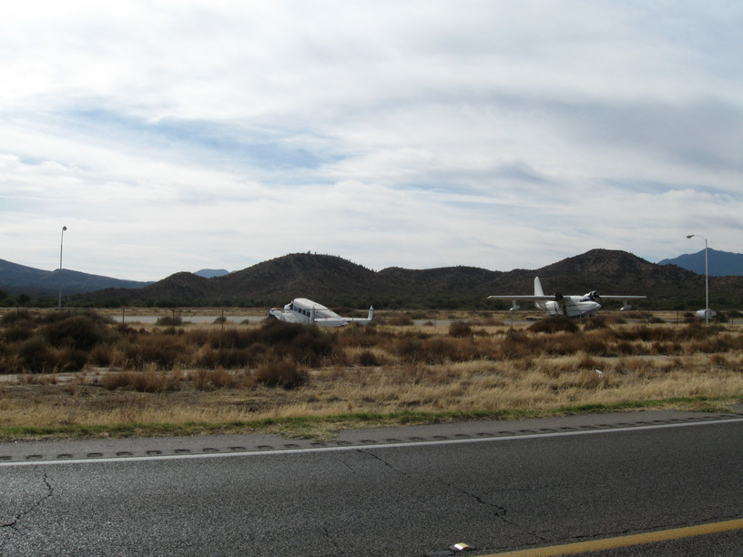
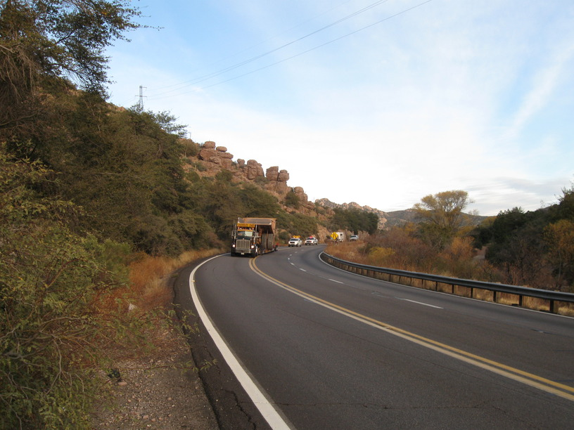
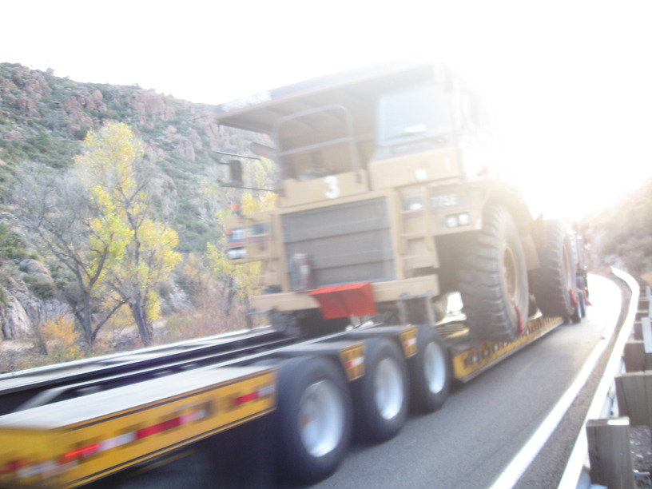

24 Nov 2008, Superior, AZ
I made good time today. It was still pretty cold this AM. Got going around 7:40 but slowly w/freezing fingers. Met Rich, who is riding the Southern Tier (then Atlantic Coast & Northern Tier) in sections. Nice guy, cool story, riding an LHT also.
Ugly climb this afternoon—no shoulder & lots of traffic. Mining equipment on big semis mellowed things out thought.
At Superior RV Park—private but very friendly & reasonable price for tents: $5. Nice guy named Pat (from Cedar Falls, Iowa) came over & we chatted. He drives trucks—AZ in the summer & CO in the winter, so he gets all the weather extremes.
Tired. Scottsdale tomorrow!




